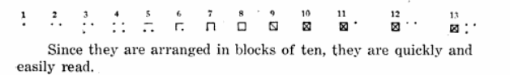

Tukey Tallying
Also called "Dot and Line Tallying"
This is a method similar to Tally Marks, but it counts to 10 in one little diagram:

So, you start with one dot (for 1), then add dots as corners of a square until 4, then join the dots with lines until 8, then draw a diagonal each to make 9 and 10.
Then you can start another diagram for 11 onwards, like this:
Example: A dot tally of 12:
12
Example: A dot tally of 27:

27
The Traditional Tally Method

But most people use the traditional Tally Marks as they are a little quicker.
Historical Note: It is named after John Tukey, but was first used by Carl Schenck to count logs in 1898:

Carl Alwin Schenck, The University Press, 1898 - Nature